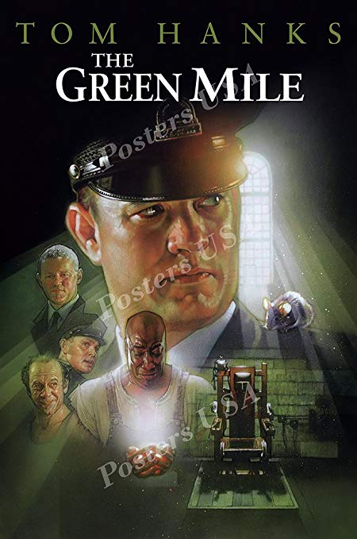
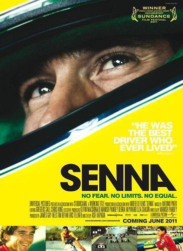
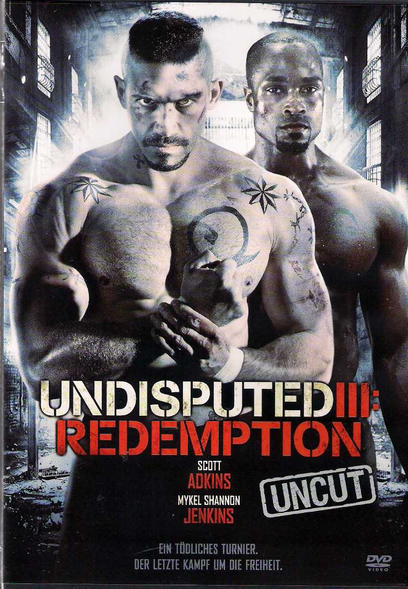

Honza Ranostaj
Front End Developer
Studied English for Interpreting and Translation, decided to switch to web development.
Studied English for Interpreting and Translation, decided to switch to web development.
|  |
Green MileThe lives of guards on Death Row are affected by one of their charges: a black man accused of child murder and rape, yet who has a mysterious gift. |
|  |
SennaA documentary on Brazilian Formula One racing driver Ayrton Senna, who won the F1 world championship three times before his death at age 34. |
|  |
Undisputed 3Boyka is back. This time he is fighting in the first ever inter-prison tournament with one knee. |
Facebook
Github
Codepen